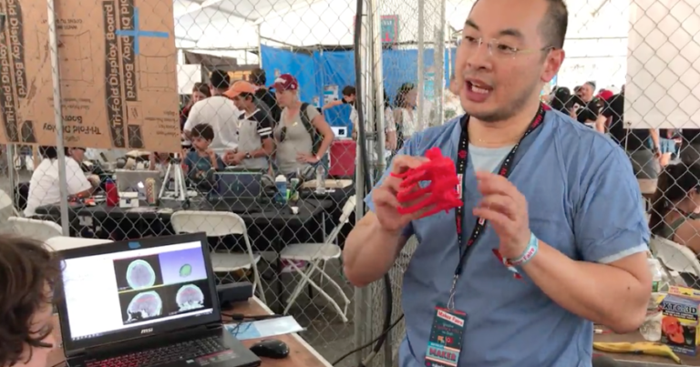

Careers in 3D Printing
Mara Hitner
It’s not just a fad. Explore how people are using 3D printers in their careers and why it’s important to teach the next generation about this growing technology.
When speaking with teachers about their efforts to bring 3D design and 3D printing programs into their K-12 classrooms, the one pervasive question is still – why? Teachers try to get funding from administration and are asked – why do you need a 3D printer? Administration springs funding on teachers earmarked for 3D printers, and teachers ask – why do I need to take time out of my classroom to teach how to use a 3D printer? Teachers introduce 3D printing to their classrooms and the parents ask – why are you wasting my child’s time with some “fad”? Answer – preparation for future jobs. And current jobs. ALL the jobs. Medicine, video games, architecture, manufacturing, product design, special effects for TV and movies, automotive, entrepreneurial efforts we’ve never even heard of (like desktop 3D printers themselves were in 2011) and more all require some form of 3D modeling skills. And the tool of choice to fabricate those models in reality – prototype or final product – is 3D printing. Teaching simple 3D modeling software like Tinkercad in schools not only prepares students to broaden the scope of job opportunities they might not have considered before, but the practice of designing something in CAD software also covers core STEAM (science, technology, engineering, arts, and math) standards that need to be taught anyway. Engagement is the unique factor here. Teachers need to work especially hard with the current generation to grab their attention and keep them engaged. Brains are changing. There are more tactile learners and kids that have various issues with paying attention than ever before (even if that issue is being distracted by the cell phone in their pocket.) Incorporating 3D design and 3D printing into the lessons teachers need to teach anyway makes the lesson stick and the classroom time more fun. Read the full article, including examples of vocations you may not have thought about before which require 3D modeling and 3D printing skills — medicine, architecture, manufacturing, product design, special effects for TV and movies, anthropology, automotive, entrepreneurial — at MatterHackers.
Link to original article Go back to homepage